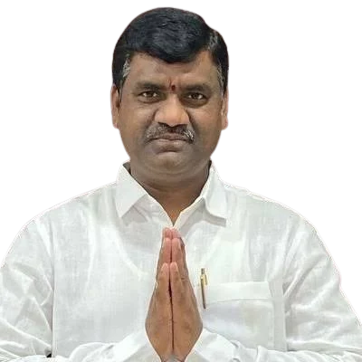
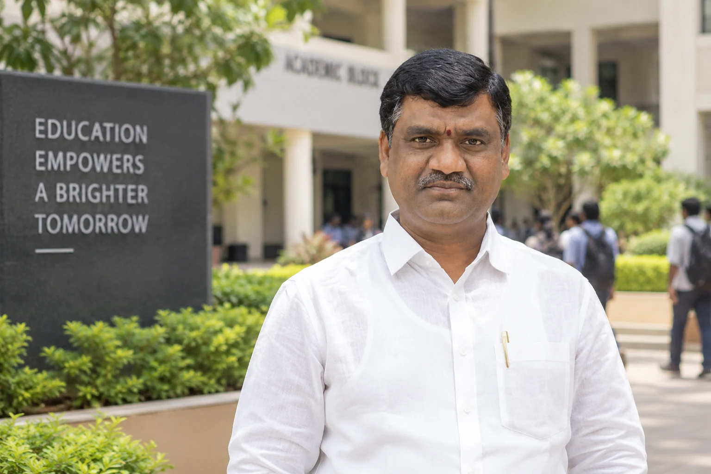
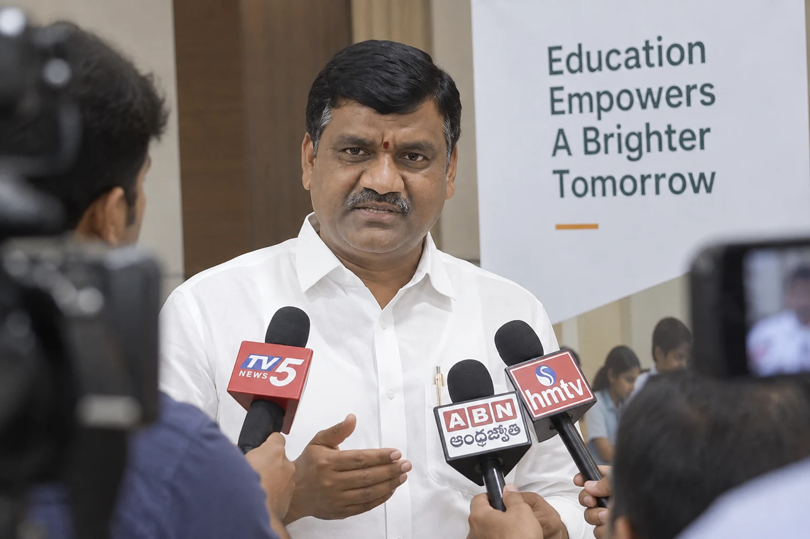
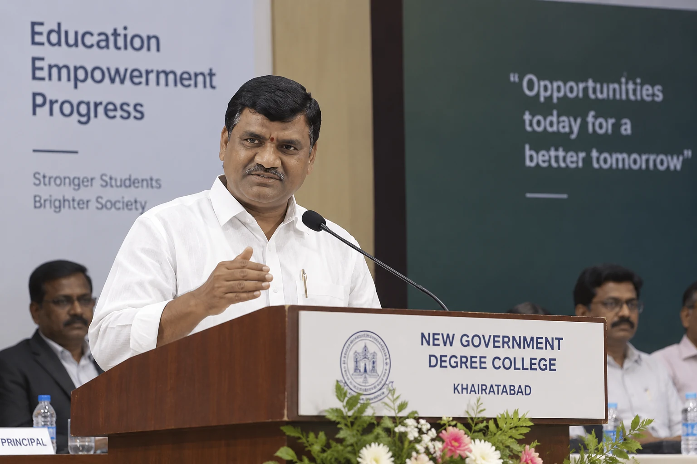
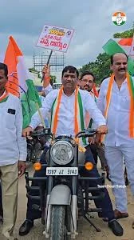
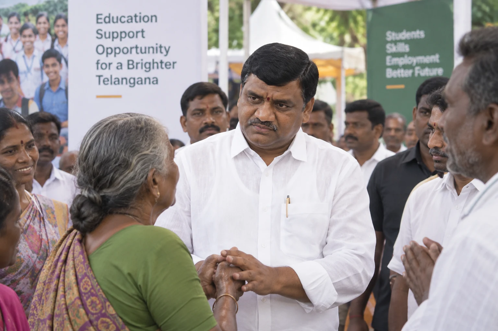
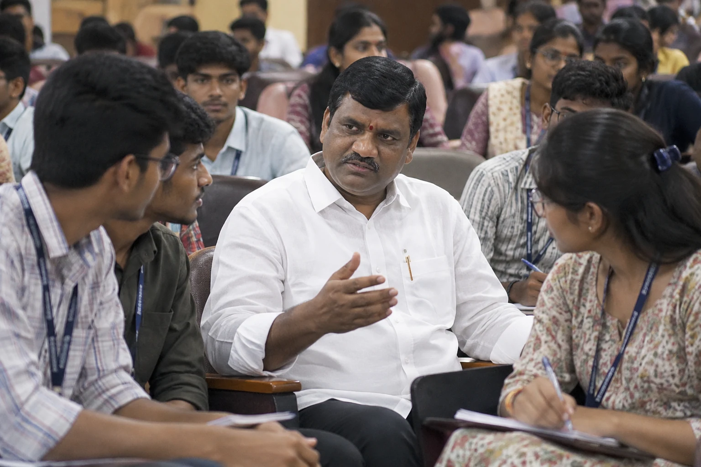
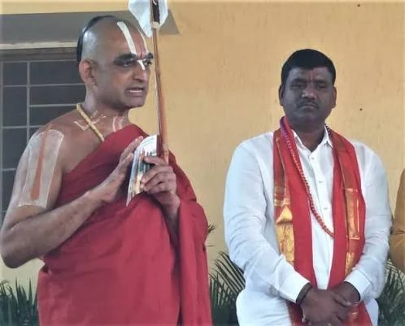
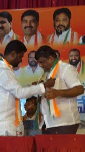

విద్య
విద్యార్థుల పరిస్థితులు వారి అవకాశాన్ని నిర్ణయించని సంస్థలను నిర్మించడం.
విద్య. అవకాశం. ప్రాతినిధ్యం.
విద్యావేత్త, ప్రజాప్రతినిధి మరియు కాంగ్రెస్ నాయకుడు — విద్యా రంగంలో రెండు దశాబ్దాలకు పైగా అనుభవం. తెలంగాణలో గ్రాడ్యుయేట్ల కోసం బలమైన స్వరం కోసం కృషి చేస్తున్నారు.

నక్కలపల్లి, మొయినాబాద్లోని ఒక వ్యవసాయ కుటుంబంలో జన్మించిన గౌరి సతీష్, ఎనిమిదవ తరగతి నుండే తన చదువును కొనసాగించడానికి పార్ట్టైమ్ పని చేశారు. న్యూ గవర్నమెంట్ డిగ్రీ కాలేజ్, ఖైరతాబాద్ నుండి గ్రాడ్యుయేషన్ పూర్తి చేసి, ఉస్మానియా విశ్వవిద్యాలయం నుండి ఎం.ఏ., ఎం.కాం. పూర్తి చేశారు.
2003లో ఆయన షంషాబాద్లో తన మొదటి జూనియర్ కళాశాలను స్థాపించారు. తన కోసం ఒక అవకాశాన్ని సృష్టించుకునే ప్రయత్నంగా మొదలైనది, ఇతరుల కోసం విద్యా అవకాశాలను సృష్టించే 23 సంవత్సరాల ప్రయాణంగా మారింది.

రెండు దశాబ్దాలకు పైగా గౌరి సతీష్ విద్యార్థులు, తల్లిదండ్రులు, ఉపాధ్యాయులు మరియు సంస్థలతో కలిసి పనిచేశారు — ఫీజు రీయింబర్స్మెంట్, గుర్తింపు, భద్రతా అనుమతులు మరియు విద్యార్థుల సంక్షేమంపై. ఈ అనుభవాన్ని ప్రజాప్రాతినిధ్యంలోకి తీసుకెళ్లాలని ఆయన కోరుకుంటున్నారు.

విద్యార్థుల పరిస్థితులు వారి అవకాశాన్ని నిర్ణయించని సంస్థలను నిర్మించడం.
డిగ్రీలను నైపుణ్యాలు, ఇంటర్న్షిప్లు మరియు ఉపాధి మార్గాలతో అనుసంధానించడం.
శాసనమండలిలో గ్రాడ్యుయేట్ల ఆందోళనలకు స్థిరమైన స్వరం ఉండేలా చూడటం.
హైదరాబాద్–రంగారెడ్డి–మహబూబ్నగర్ గ్రాడ్యుయేట్స్ నియోజకవర్గం విద్యావంతులైన పౌరుల విభిన్న సమాజానికి ప్రాతినిధ్యం వహిస్తుంది. వారి ఆందోళనలు కేవలం డిగ్రీకి మించినవి — ఆరు ప్రాధాన్యతలు ఈ దార్శనికతను రూపొందిస్తాయి.
“అవకాశం కోరడం నుండి అవకాశాలను సృష్టించడం వరకు.”
గౌరి సతీష్
విద్యార్థులకు వారి పరిస్థితులతో సంబంధం లేకుండా అవకాశం & కొనసాగింపు.
పరిశ్రమకు సంబంధించిన నైపుణ్యాలు, సర్టిఫికేషన్లు, ఇంటర్న్షిప్లు.
గ్రాడ్యుయేట్ల ఆందోళనలను లేవనెత్తడానికి, జవాబుదారీతనాన్ని కోరడానికి స్థిరమైన వేదిక.
నియోజకవర్గం అంతటా విద్యార్థులు, ఉపాధ్యాయులు, కుటుంబాలు, పౌరుల మాట వినడం.

విద్య మరియు ప్రజా జీవితంలో గౌరి సతీష్ నిమగ్నతల నుండి తాజా సమాచారం.
మరింత చదవండివిద్య మరియు గ్రాడ్యుయేట్లపై టెలివిజన్, డిజిటల్, ప్రింట్ ఇంటర్వ్యూలు.
మరింత చదవండి
తెలంగాణలో గ్రాడ్యుయేట్లు, ఉపాధి, నైపుణ్యాలు, ఉన్నత విద్యపై దృక్కోణాలు.
మరింత చదవండి




మీ స్వరం ముఖ్యం. నమోదైన గ్రాడ్యుయేట్ ఓటరుగా ఉండి మెరుగైన రేపటికి మద్దతు ఇవ్వండి.